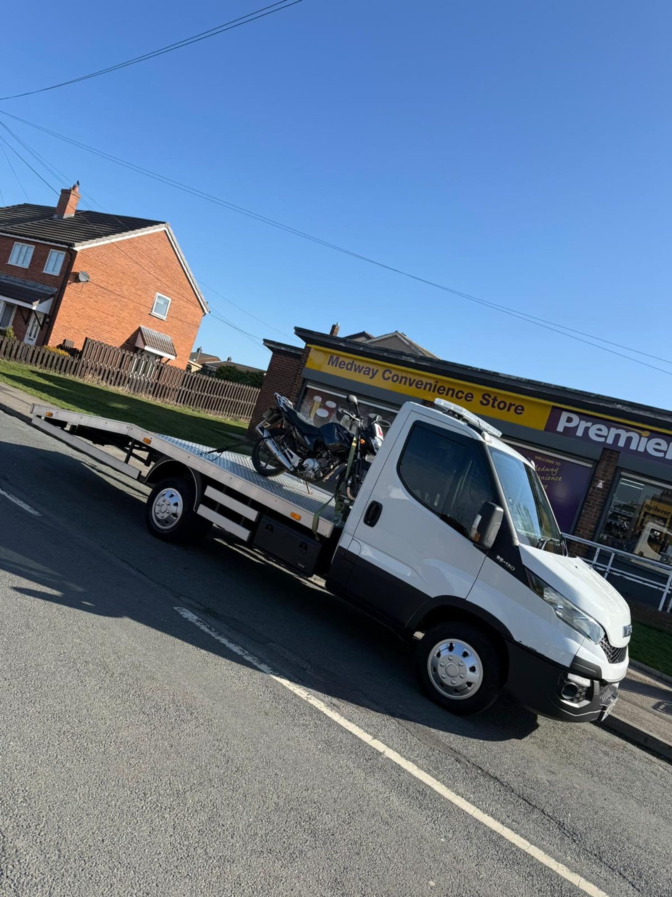

🪢
Rated soft straps only
No ratchet straps gouging your tank or rim. Cam straps, soft-loop attachments, fork-saver bars on request. Frame & subframe-rated lashing points.
🏍️ Motorbike Recovery
Your bike doesn't belong on a hook and a strap-it-yourself trailer. We carry rated bike-specific soft straps, wheel chocks and tank protection. Safe, careful, properly tied down — sportbikes, cruisers, adventure bikes, classics, dropped bikes after a tip-off.
Bikes need different handling — and the wrong recovery operator can do more damage than the breakdown itself.
No ratchet straps gouging your tank or rim. Cam straps, soft-loop attachments, fork-saver bars on request. Frame & subframe-rated lashing points.
Front wheel locked into a Pingel-style chock; four-point tie-down at the bars and pegs. Bike stays vertical the entire trip, no leaning load.
Soft cloths under every contact point. Mirrors and screens removed if the bike's going to a long-haul destination.
Full-circle photos at pickup and drop-off, sent by WhatsApp. So if anything's marked at delivery, we've got the dated baseline.
Lifting equipment on the truck. We handle low-sided, high-sided, broken-fairing recoveries with the care they need.
Track day group? Garage clear-out? Up to three bikes in one trip on request — all chocked and strapped individually.
